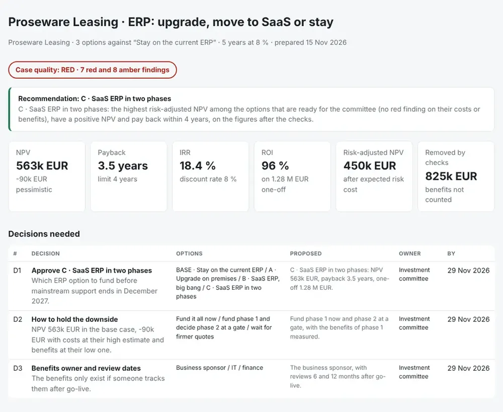

Moving an ERP to SaaS in one go looks like the best option as submitted, with a net present value of 1.89 million, but it falls to 1.10 million and is marked not ready once the checks remove 825,000 of benefits. That is what the IT business case builder published with this post finds. It is an open-source tool, and its demo is a made-up leasing company deciding what to do with its ERP before support ends: staying, upgrading on premises, a SaaS big bang or SaaS in two phases.
The net present value, NPV, is the sum of each year's net cash flow discounted to today. For every option, the tool takes the cost of doing nothing minus the cost of the option plus the hard benefits, year by year from year zero, and computes NPV, IRR, payback, ROI, the one-off cost, the total cost of ownership and the NPV after the expected cost of the risks. The comparison is always with doing nothing, which is never free.
The two-phase option wins, with a gate before phase two
The tool recommends SaaS in two phases, at an NPV of 563,000 and a payback of three and a half years. It adds a gate before phase two, because that option loses money in the pessimistic case. An option with a red finding on its costs or benefits is not ready and is not recommended, whatever its NPV; among the rest, the highest risk-adjusted NPV that pays back in time wins, and weighted non-financial criteria break ties.
The mistakes a finance partner looks for
The checks are the ones a finance partner makes before the committee. A saving is counted twice when it names a cost the current platform pays and the option no longer has, because that saving is already in the difference between the two. Benefits that start before the go-live year are removed for those years, and hard benefits with no owner move to soft. Hours saved counted as cash, benefits with no KPI and unvalidated assumptions that carry the case, such as a vendor discount or the release of a contractor, are flagged too.
On the cost side, the tool looks for missing migration, decommission, training and internal staff costs, years with no running cost and risks with no mitigation. Where contingency is missing, it adds what the estimates need: more for a rough estimate than for a quote.
Pessimistic and optimistic cases
A base case shown alone hides what happens if costs go up a fifth or go-live slips six months. The tool moves each cost by its confidence and each benefit by its evidence to build a pessimistic and an optimistic case, and measures how sensitive the NPV is to costs, benefits, a late go-live and the discount rate. It also produces the decisions for the committee and a benefits register with a KPI, an owner and reviews six and twelve months after go-live.
How to use it with real data
A template command starts a case from a spreadsheet with the options, their costs year by year, the benefits, the risks, the assumptions and the non-financial criteria. The tool runs on Python with the standard library only and produces report.html, with the cumulative cash flow and the sensitivity chart; business-case.md, the paper for the committee; and CSV files for the options, cash flows, sensitivity, benefits, assumptions, findings and actions. It comes with 16 tests and a runbook from first draft to the committee.
Where it comes from
I built it from preparing business cases with ROI and measurable benefits, estimating costs and timelines, managing IT budgets, using FinOps and TBM for cost transparency, negotiating vendor contracts and supporting an ERP (SAP) for the business. Two lessons are behind it: the most common mistake is counting the same saving twice; and a committee trusts a case that shows what was removed and what the downside is.
Want to bring it to your environment or adapt it to your case? Get in touch and we can look at it together.
Tech Career Lab · newsletter
Found this useful? Every two weeks I send one practical idea for IT professionals: LinkedIn, projects, networking and hiring processes.
Sign up and get the 33 ideas →